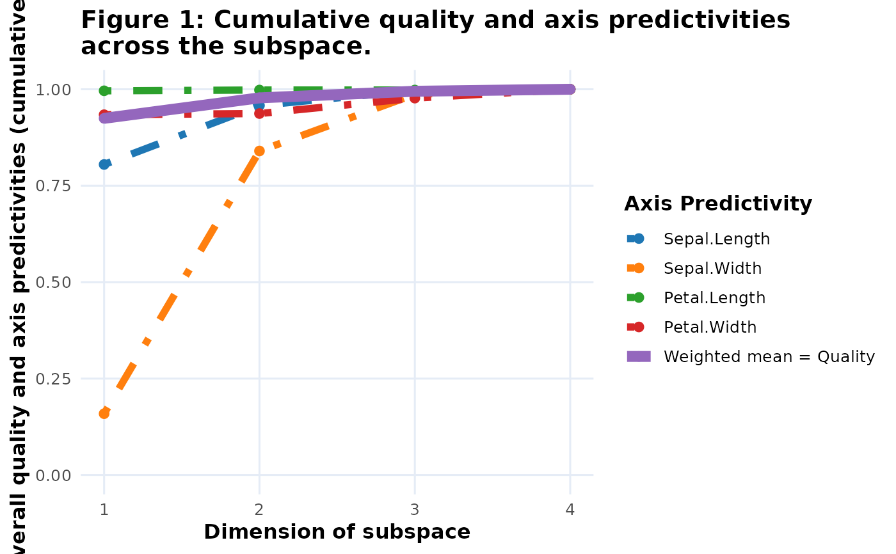

Three calling styles are supported:
mdsDisplay subset:
extract(bp, mdsDisplay_12)— returns a newbipl5_biplotcontaining only that mdsDisplay (plottable).Two-level:
extract(bp, from = mdsDisplay_12, what = sample_coordinates)— returns the nested data element.Arbitrary depth:
extract(bp, mdsDisplay_12$Data$sample_coordinates)— returns the nested data element.
Usage
extract(object, expr, from, what)
# S3 method for class 'bipl5_biplot'
extract(object, expr, from, what)Value
A bipl5_biplot (mdsDisplay subset), a bipl5_fit object
for graph-based fit measures, or the requested sub-element.
Details
In addition to the mdsDisplay access patterns above, graph-based fit measures
can be extracted directly with calls such as
extract(bp, fit_measures, CumPred) or
extract(bp, fit_measures$CumPred). Supported graph-based fit measures
are CumPred, CumAd, VarExp, and Scree. These
calls return a bipl5_fit object that can be passed to plot() to
obtain a static ggplot2 version of the corresponding fit graph.
Examples
bp <- biplotEZ::biplot(iris[, 1:4]) |>
biplotEZ::PCA() |>
wrap_bipl5()
only_12 <- extract(bp, mdsDisplay_12)
data_obj <- extract(bp, from = mdsDisplay_12, what = Data)
coords <- extract(bp, mdsDisplay_12$Data$sample_coordinates)
fit_plot <- extract(bp, fit_measures, CumPred)
plot(fit_plot)
